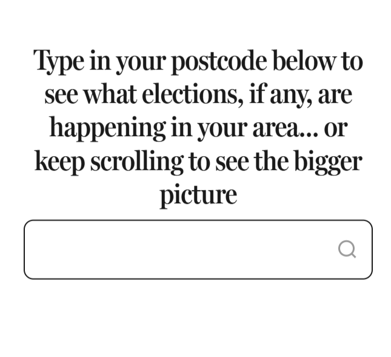
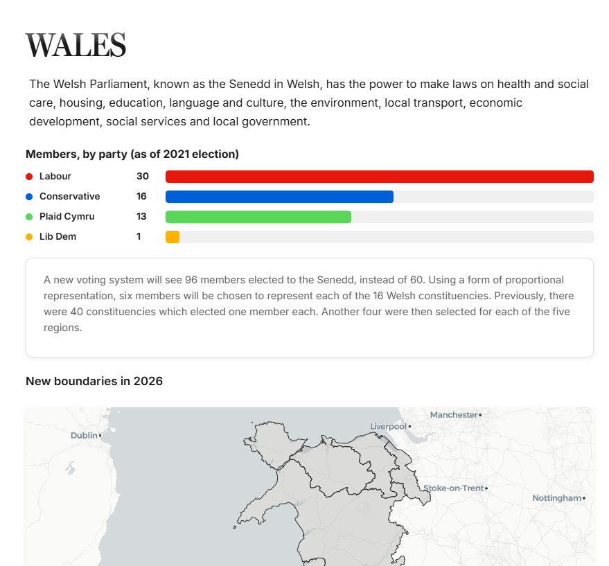
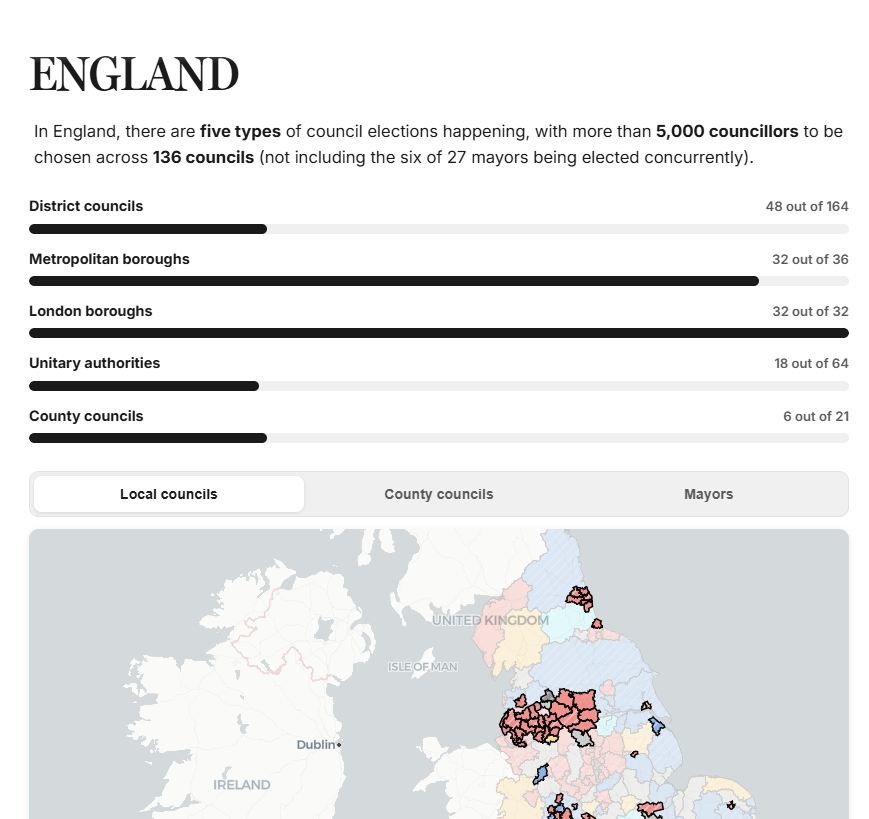
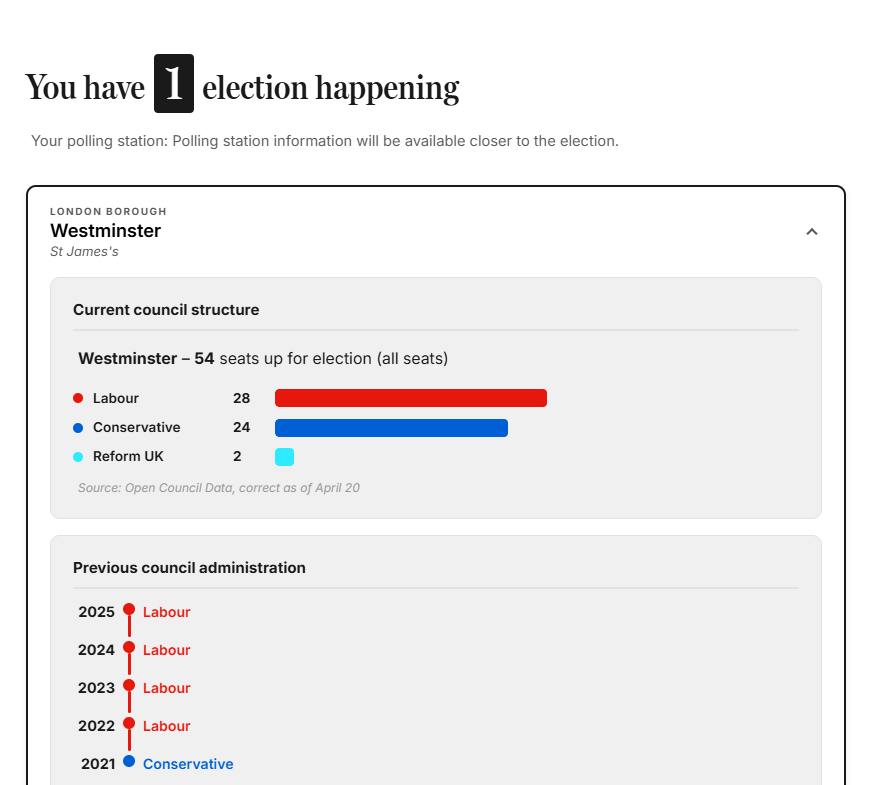

Visual storyteller & front-end designer
Bridging the gap between complex data and interactive digital experiences.
Award-winning innovation for the Daily Mail and public sector.
Data visualisation · Public sector storytelling
This project was created to help readers quickly identify whether their area was up for a vote in the local elections, and to show the historical voting context for each place.
It was built for a local elections feature using official council ward boundaries and past election data, with clear visual cues that show which areas were contested, and which were not.
The maps combine current election boundaries with historical turnout and result patterns so readers can compare the latest contest with previous cycles. This makes it easier to understand where local decisions were made and how different neighbourhoods have voted over time.
The finished visuals are designed to support readers in checking whether their area was included in the vote and to place current results in the wider local election history.



